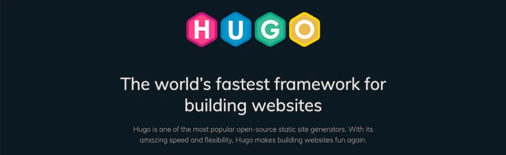

简简单的说，静态网站生成器会获取你的内容，并将其应用于模板，然后生成基于 HTML 的静态网站。非常适合个人博客。
好处：
那么，都有哪些流行的静态网站生成器呢？
这些项目在 GitHub 上的知名度非常高。
其官方网站号称 Hugo 是世界上最快的静态网站引擎。

Hugo 是用 Go 语言编写的，它还有非常丰富的主题系统。
Mac:
brew install hugoLinux:
sudo apt-get install hugo
# 或者
sudo pacman -Syu hugo然后执行下面的命令检查是否安装成功：
hugo versionhugo new site my-project下载一个主题。可以在 https://themes.gohugo.io/ 找到更多你喜欢的主题。
我们以 ananke Theme为例：
首先创建themes目录，并下载Hyde Theme文件：
$ mkdir themes
$ cd themes
$ git clone https://github.com/budparr/gohugo-theme-ananke.git ananke接下来，我们需要对Site进行一些配置，tonybai.com/config.toml是Site的顶层配置文件，配置后的config.toml文件如下：
baseurl = "http://tonybai.com/"
languageCode = "en-us"
title = "Tony Bai"
theme = "ananke"
[params]
description = "这里是Tony Bai的个人博客"
themeColor = "theme-base-08" # for hyde theme在tonybai.com目录下重新执行hugo server，并打开浏览器查看站点首页，你会发现视野里有内容了：
hugo new posts/my-first-post.md它看上去应该像这样：
---
title: "My First Post"
date: 2021-03-10T18:37:11+08:00
draft: true
---
Hello World!可以在这里给文章添加添加更多属性配置（标签，描述，类别，作者）。
可以在 https://gohugo.io/content-management/front-matter/ 了解更多的配置项。
看看效果：
hugo server -D在浏览器中打开 http://localhost:1313 就能看到你的网站了。
.
├── archetypes
├── assets (not created by default)
├── config.toml
├── content
├── data
├── layouts
├── static
└── themesarchetypes：Archetypes 是内容模板文件，其中包含预配置的首选项（日期、标题、草稿等）。可以用自定义的预配置前端字段创建新的原型。
assets：Assets 文件夹存储所有文件，这些文件由 Hugo Pipes 处理（例如 CSS/Sass 文件）。默认不创建这个目录。
config.toml：Hugo 使用 config.toml、config.yaml 或 config.json（可以在网站根目录中找到）作为默认网站配置文件。除了单独的配置文件之外，你还可以使用 - config directory 来分隔不同的环境。
content：所有内容文件放在这里。顶级文件夹计为内容部分。如果你有 devops 和 nodejs 部分，那么你需要有 content/devops/first-post.md 和 content/nodejs/second-post.md 目录。
data：这里用来存储配置文件，Hugo 会在生成你网站时用到。
layouts：以 .html 文件的形式存储模板。有关更多信息，请参见 Styling 部分。
static：存储所有静态内容：图片、CSS、JavaScript 等。当 Hugo 创建你的网站时，static 目录中的所有资源均按原样复制。
themes：你所选择的 Hugo 主题。
我们在之前应用了一个主题。现在，如果我们检查 themes 文件夹，可以看到样式文件。
但是要当心！
千万不要直接编辑这些文件！。
应该将主题目录结构复制到 layouts 文件夹。
假设我要将自定义 CSS 应用于主题。
主题有一个 themes/theme-name/layouts/partials 文件夹，可以在其中找到一些HTML模板（header.html、footer.html）。现在我们将编辑 header.html 模板，将内容从这个文件复制到 layouts/partials/header.html中，并注意在主题 layouts 根目录中创建与主题相同的目录结构。
layouts/partials/header.htmlss
themes/theme-name/layouts/partials/header.html创建一个自定义CSS文件： static/css/custom-style.css，然后把自定义 CSS 文件添加到 config.toml中：
[params]
custom_css = ["css/custom-style.css"]打开 layouts/partials/header.html：
将这段代码添加到 `<head>标签内：
{{ range .Site.Params.custom_css -}}
<link rel="stylesheet" href="{{ . | absURL }}">
{{- end }}现在，就可以覆盖主题中所应用的 CSS 类。
在项目的根目录下执行 hugo 命令：
>>> hugo
| EN
-------------------+-----
Pages | 14
Paginator pages | 0
Non-page files | 0
Static files | 1
Processed images | 0
Aliases | 6
Sitemaps | 1
Cleaned | 0
Total in 74 ms执行成功后，会生成一个public 目录，这个目录中的内容就是我们静态网站的所有内容。
然后就可以托管到 GitHub 或 OSS 中了。
Hugo 还提供了更多的内容，可以到官方文档查看：https://gohugo.io/documentation/。
推荐主题：
https://github.com/xianmin/hugo-theme-jane
[1] https://themes.gohugo.io/: https://themes.gohugo.io/[2] https://gohugo.io/content-management/front-matter/: https://gohugo.io/content-management/front-matter/[3] https://gohugo.io/documentation/: https://gohugo.io/documentation/